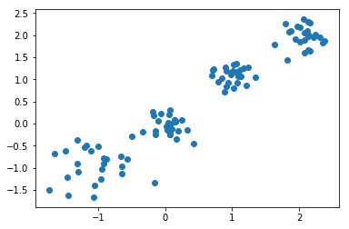
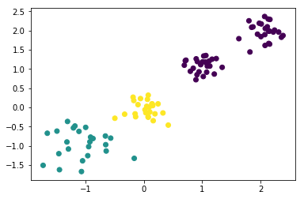
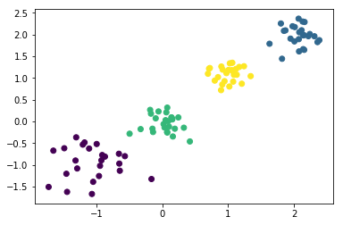
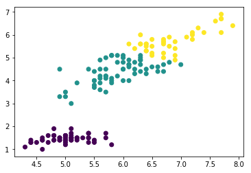
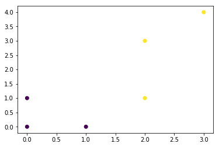

通过sklearn模块实现
import numpy as np
import matplotlib.pyplot as plt
from sklearn import metrics
from sklearn.datasets import make_blobs
from sklearn.cluster import KMeans
from sklearn.datasets import load_iris
%matplotlib inline
X,y = make_blobs(n_samples=100,n_features=2,centers=[[-1,-1],[0,0],[1,1],[2,2]],cluster_std=[0.4,0.2,0.2,0.2])#使用make_blobs生成训练数据，生成100个样本，每个样本2个特征，共4个聚类，聚类中心分别为[-1,-1],[0,0],[1,1],[2,2]，聚类方差分别为0.4,0.2,0.2,0.2
plt.scatter(X[:,0],X[:,1])#画出训练样本的散点图，散点图的横坐标为样本的第一维特征，纵坐标为样本的第二维特征
plt.show()

kmeans = KMeans(n_clusters=3)#生成kmeans分类器,聚类数量为3，其余参数使用默认值。
y_pred = kmeans.fit_predict(X)#使用fit_predict方法计算聚类中心并且预测每个样本的聚类索引。
plt.scatter(X[:,0],X[:,1],c=y_pred)#画出训练样本的散点图，散点图的横坐标为样本的第一维特征，纵坐标为样本的第二维特征，将各聚类结果显示为不同的颜色
plt.show()

kmeans = KMeans(n_clusters=4)#生成kmeans分类器,聚类数量为4，其余参数使用默认值。
y_pred = kmeans.fit_predict(X)#使用fit_predict方法计算聚类中心并且预测每个样本的聚类索引。
plt.scatter(X[:,0],X[:,1],c=y_pred)#画出训练样本的散点图，散点图的横坐标为样本的第一维特征，纵坐标为样本的第二维特征，将各聚类结果显示为不同的颜色
plt.show()

iris = load_iris() #导入iris数据集,iris数据集包含了150个样本，分别属于3类，每个样本包含4个特征
data_train=iris.data #iris样本集的样本特征
label_train=iris.target #iris样本集的样本标签
kmeans = KMeans(n_clusters=3)#生成kmeans分类器,聚类数量为3，其余参数使用默认值。
y_predict = kmeans.fit_predict(data_train)#使用fit_predict方法计算聚类中心并且预测每个样本的聚类索引。
plt.scatter(data_train[:,0],data_train[:,2],c=y_predict)#画出训练样本的散点图，散点图的横坐标为样本的第一维特征，纵坐标为样本的第三维特征，将各聚类结果显示为不同的颜色
plt.show()

可以手动实现一下
2、K-means
import numpy as np
import matplotlib.pyplot as plt
center = np.array([[0,0],[0,1]])
cls_num = 2
X = np.array([[0,0],[0,1],[2,1],[2,3],[3,4],[1,0]])
max_iter = 10
cls = np.zeros(X.shape[0])
run = True
while run and max_iter > 0:
for i,x in enumerate(X):
tmp = np.argmin(np.sum(np.power(x - center,2),axis=1))
cls[i] = tmp
run = False
# 重新计算聚类中心
for i in range(cls_num):
data = X[cls==i] # 取相同类别的样本
new_center = np.mean(data,axis=0) # 对相同类别的x和y取平均值
if np.sum(np.abs(center[i]-new_center),axis=0) > 1e-4:
center[i] = new_center # 更新中心
run = True
max_iter -= 1
plt.scatter(X[:,0],X[:,1],c=cls)
plt.show()
